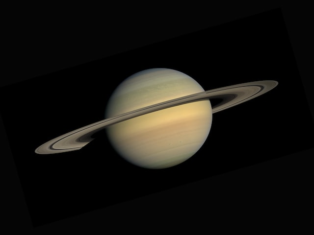

Welcome to Starry Nights!
This is a simple page about all things astronomy related, like the stars and planets, just anything space related. We may change this more frequently in the future; the contents of this page will change at any time.
Here are the main topics for the page today!
Jupiter
Saturn
Neptune
Jupiter
Below are some fun facts I've gathered about Jupiter from other sites. These sources include Universe Today and Nine Planets.
Saturn
Below is a picture of Saturn.
Because Saturn's color is a hazy yellow-brown, this text is light yellow. As you can see, Saturn has many rings around it. This picture was kindly provided by NASA from Unsplash.
Neptune
WARNING: Visiting this planet will take 12 years, and not to mention, it's really cold there. It is STRONGLY advised for you not to go there.
A long time ago, according to NASA, Neptune took its shape at the same time as the formation of the solar system. Gravity pulled swirling gas and dust together to make it. It makes me wonder if other planets were created a similar way.